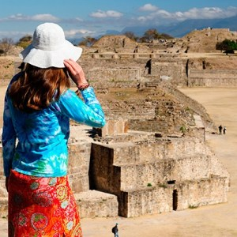

OAXACA
Oaxaca oficialmente llamado Estado Libre y Soberano de Oaxaca (AFI: [oa'xaka], coloquial:
huajáka [wa'haka] ( escuchar)), es uno de los treinta y un estados que, junto con la Ciudad de México,
forman México.56 Su capital y ciudad más poblada es Oaxaca de Juárez. Está dividido en 570 municipios,
418 de los cuales se gobiernan bajo el sistema de usos y costumbres, con formas locales reconocidas de autogobierno.
Está ubicado en la región suroeste del país. Limita al norte con Puebla y Veracruz, al este con Chiapas, al sur con el
océano Pacífico y al oeste con Guerrero. Con 93 757 km², es el quinto estado más extenso —por detrás de Chihuahua,
Sonora, Coahuila y Durango— y, con 3 967 889 de habitantes en 2015, el décimo más poblado. Se fundó el 21 de diciembre
de 1823.
El estado es conocido principalmente por sus pueblos indígenas, representados por más de 16 grupos étnicos,
y los zapotecos y mixtecos son los de mayor representación. Estas culturas han sobrevivido y mantenido sus usos y
costumbres con mayor éxito que el resto del territorio nacional, gracias al accidentado y aislado territorio del estado.
La mayoría de estos grupos habitan la zona centro del estado, cuya riqueza cultural, que incluye zonas arqueológicas como
Monte Albán y Mitla, la convierten en una zona turística de importancia.1011 Otras zonas turísticas de importancia se encuentran
en la costa, con complejos de importancia como Huatulco, Zipolite, Puerto Escondido, Mazunte y Bahía de Tembo. Así mismo,
Oaxaca es considerada como uno de los estados con mayor diversidad biológica, por su número de especies endémicas de reptiles,
anfibios, mamíferos y plantas.13
Lugares Turisticos de Oaxaca
-
Oaxaca de Juarez
Oaxaca de Juárez, es el nombre oficial de la capital del estado y —junto con Monte Albán—
fue nombrada Patrimonio Cultural de la Humanidad, hace más de veinte años. Un día ideal en esta hermosa
ciudad empezaría desayunando en el popular Mercado 20 de Noviembre, situado en el centro histórico. Este mercado
es conocido por su famoso pasillo de las carnes, aunque también puedes disfrutar de otros platillos típicos
en los comedores que inundan el mercado. Muy cerca se encuentran el Mercado de Artesanías y el Mercado Benito
Juárez, en el que abunda el mezcal, pero también puedes conseguir insumos como quesillo, chorizo y tasajo —una especie
de cecina que se produce en todo Oaxaca—. Por esos mismos rumbos, los visitantes con una conciencia verde, podrán adquirir
productos orgánicos en el mercado El Pochote.
-
Monte Alban
Monte Albán se encuentra a unos 7 km de la ciudad de Oaxaca,
por lo que es fácil llegar por carretera; puedes tomar autobús, ir en coche e incluso en taxi.
Esta ciudad —fundada por los zapotecas— en su apogeo llegó a albergar a 35,000 habitantes.
En la actualidad se pueden observar los vestigios arquitectónicos que hablan de la vida
de una cultura que desarrolló observatorios astronómicos, centros ceremoniales y un juego de pelota
entre otras construcciones. La zona arqueológica comprende un espacio bastante grande y para acceder
a ella deberás subir una pequeña pendiente, por lo que te recomendamos llevar calzado deportivo y ropa cómoda.

-
Hierve el Agua
Hierve el Agua es uno de los destinos más populares de Oaxaca. Si planeas visitar lugares como
Teotitlán del Valle y Mitla, no puedes perderte las cascadas petrificadas en la parte alta de la sierra, el panorama
es simplemente espectacular. Aunque su nombre indique lo contrario, las pozas de agua que conforman el pequeño balneario
no tienen agua caliente, pero sí es rica en minerales, por lo que las personas le atribuyen poderes sanadores. Digamos que
llevar traje de baño no es una prioridad, pero si vas en verano, un chapuzón seguro te refrescará.
-
Mitla
Rumbo a Hierve el Agua encontrarás Mitla, la segunda zona arqueológica más importante de los
valles centrales de Oaxaca. No te pierdas esta experiencia cultural y disfruta de esta ciudad construida
después del ocaso de Monte Albán. A diferencia de este, Mitla es un lugar con espacios más contenidos, por
lo que si eres amante de la arquitectura, te fascinará. Mitla también ofrece otros atractivos: está rodeada
de fábricas de mezcal y restaurantes en los que podrás disfrutar de la gastronomía oaxaqueña, como una auténtica
segueza.
-
Teotitlan del Valle
Uno de los caminos más bonitos de Oaxaca nos lleva a esta comunidad textilera;
un pueblo zapoteco que ha sabido conservar sus tradiciones y las comparte con el mundo a través de sus creaciones.
En el mercado de Teotitlán podrás encontrar tapetes y ropa tejida a mano por los habitantes de este pueblo,
que utilizan pigmentos naturales como la grana cochinilla, la granada, la nuez y la planta del índigo como tinte de sus
hilos y telas. No olvides pedir una demostración para conocer todos los detalles del proceso de creación, desde el hilado
de la lana, la pigmentación y el tejido.
¿Que esperas?
¡ATREVETE A CONOCER OAXACA!